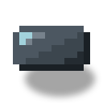
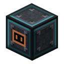
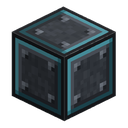

原子炉アンテナ
alaindustrial:reactor_antenna
概要
原子炉アンテナは、原子炉タブレットが建造物を遠くから見るための シェルのブロックです。アンテナが無いと、タブレットは原子炉を見つけられず、原子炉に登録もできません。 このブロックはプレイヤーからの「原子炉を遠隔で見たい」という要望（）から生まれ、入力と出力 がすでに採っている考え方をそのまま踏襲しています。壁に機能が必要なら、そのために作られた壁の 一片に持たせる、ということです。
アンテナはケースのマスを 1 つ占めます。部屋のスキャナーにとってはケースそのもので、破れにはならず、 ガラスの上限にも入らず、密閉も損ないません。制御装置は、出力端子を集めるのと 同じシェルの巡回でアンテナを見つけるので、アンテナには専用の探索も逆参照もありません。
アンテナは動作に対価を払います。小さな専用の EU/FE バッファと、一定の消費があります。エネルギーが 無ければ動かず、タブレットには「アンテナに電力なし」と表示されます。消費を最初のティアから入れて あるのは、後から入れるとプレイヤーがすでに建てたアンテナが、アップデート後に動かなくなってしまう からです。
状態: 仕様。バッファと消費の数値は決定済みです（「バランス」参照）。
何をするか
| 項目 | 値 |
|---|---|
| 建造物での役割 | シェルのブロック。スキャナーにはケース（CASING）として映る |
| 与えるもの | タブレットとこの部屋の制御装置との通信 |
| タブレットの登録 | タブレットでアンテナを Shift+右クリック — タブレットがこの部屋の制御装置を記憶する |
| 通信距離 | = 電力のある最寄りのアンテナから 64 ブロック。3 軸で測り、同じディメンション内 |
| バッファ | = 4000 EU/FE |
| 消費 | = 4 EU/FE/tick、一定 |
| BlockEntity | あり: EU/FE バッファと一定の消費 |
| 部屋のスキャナーにとって | ケース — 破れを作らず、ガラスの上限にも入らない |
| ブロックステート | formed、edge — シェル全体と同じく見た目だけ |
アンテナは原子炉のデータを保持せず、自分では何も送りません。データはアンテナが稼働しているあいだ、 タブレットが制御装置から取ります。アンテナは通信を許可するだけで、その代わりにエネルギーを 受け取ります。
どこに置けるか
- 部屋のある原子炉。 アンテナは壁・床・天井のケースのマスと置き換えて設置します。制御装置は出力 端子と同時に、周の巡回でそれを集めます。部屋の
antennas一覧に入るのは次のスキャン （ = 40 ティック）のときで、即座ではありません。 - むき出しの原子炉（部屋なし）。アンテナが制御装置に面で接しているときに数えられます。むき出しの 原子炉には周の巡回が無く、接触がアンテナが見つけられる唯一の方法です。
- 部屋には複数のアンテナを置けます。通信は電力のある最寄りのものから数えます。
- 部屋の外にあり、制御装置にも接していないアンテナは何もしません。制御装置が見つけられず、 タブレットを登録することもできません——登録が書き込むのは制御装置であり、そのアンテナには 制御装置が無いからです。
部屋は密閉されたまま
アンテナはシェルのブロックで、スキャナーはこれをケースとして読みます。入口でも ガラスでもありません。出力端子やランプと同じ流れです。
- 破れとは数えません — 壁・床・天井のどのマスにも置けます。
- = 30 % の上限には入りません。
formed/edgeを持ち、制御装置が部屋を認めると、壁全体と一緒に継ぎ目のないテクスチャへ切り替わ ります（「継ぎ目のない見た目」参照）。
アンテナを加えて、スキャナーが壁と見なすブロックは 8 種になりました。これまでの 7 種——ケース、 ガラス、ランプ、エアロックドア、入力、出力、壁の中の制御装置——にアンテナが加わります。
エネルギー
| 項目 | 値 |
|---|---|
| 面の役割 | 受け口（IN）。ケーブルはアンテナ自身の側と、「八木」の素子の上側を除く、マストのマスのどの側からでも接続でき、銅のスリーブとなってアンテナの面にあるコネクタへまっすぐ入ります。アンテナ自身の空いた面へは従来どおり |
バッファに補給される順序:
- マストのマス（「外観」参照）への外部ケーブル——主な経路です。アンテナは普通の消費者としてネット ワークにつながります。
- 制御装置。 外部の電力が無ければ、制御装置が原子炉のバッファからアンテナへエネルギーを補います 出力端子へ配るのと同じ経路（）です。止まっていてエネルギーを売っていない原子炉も、 バッファに何か残っているかぎりアンテナに給電します。
- どちらも無い。 アンテナは動きません。通信は途切れ、タブレットには「アンテナに電力なし」と出ます。
消費は、モニタリングウォールのコアの消費と同じ方式で引かれます。出来事ごとで はなく、経過時間に対する一定の料金です。誰かがタブレットを見ているか、原子炉が動いているかには関係 しません。アンテナは稼働していて支払っているか、していないかのどちらかです。
距離とティアはエネルギーを要し、それを回避する方法はありません。エネルギー以外の手段でアンテナを 動かすことはできません。
原子炉のバッファが共通で足りないとき、「アンテナを先にするか、エネルギーの販売を先にするか」の順序は 実装時に決め、ここに記します。あらかじめ分かっている制約がひとつあります。バッファからの配給は バッファが空のとき（ は充電ゼロで）止まるので、原子炉だけで生きているアンテナは、空に なった原子炉と一緒に消えます。これは想定どおりです。エネルギーの無い停止中の原子炉を見たいなら、 アンテナをケーブルで給電しなければなりません。
警報のレッドストーン出力
アンテナのブームは原子炉の状態に応じて弱いレッドストーン信号を出します（）。ブームからダストや リピーターを引き、先に非常灯、のちにはサイレン（）、あるいはプレイヤー の好きな回路をつなぎます。信号を出すのはブームだけで、壁の中のアンテナブロックは出しません。
| 強度 | いつ | オンとオフ（原子炉のゲージ） |
|---|---|---|
| 0 | 通常 | — |
| 7 | 警告 | = 70 % でオン、 = 60 % 未満でオフ — コントローラーのサイレンと同じラッチ |
| 15 | 事故 | カウントダウンが始まっているか、炉心溶融ラッチが保持されている： = 85 % でオン、 = 70 % 未満でオフ |
- ゲージはパネルやサイレンと同じもの：部屋の熱、むき出しの原子炉なら不安定度です。むき出しの原子炉には 炉心溶融のラインがないので、15 を出すのはカウントダウン中だけです。ラック 3 基でゲージは 90 % に保たれる ため、ラック 3 基の溶岩ファームは常に 7 を出します — これは正しい動作です。
- ヒステリシス。どちらの段もオンより低い値でオフになるので、ゲージがしきい値付近で揺れても信号はばたつき ません：7 は 70 ↔ 60、15 は 85 ↔ 70。炉心溶融ラッチはコントローラーと一緒に保存されます。
- 信号はコントローラーのティックの最後の段階で計算され、カウントダウンの後なので 1 ティック遅れることは ありません。ワールドへの書き込みは強度が変わったときだけで、余計な隣接更新はありません。
- 弱い信号で、日照センサーと同じです。ブームの隣のダスト、リピーター、コンパレーター、ランプが受け取り ます。隣の不透過ブロックには信号を伝えません。
- リンクがなければ無信号。電力がない、維持費が払われていない、ブームの場所がふさがれた、コントローラーが 壊された、コントローラーのチャンクが読み込まれていない — そのようなアンテナは 0 を出します。信号を 出しているブームは 20 ティックごとに背後のアンテナを確かめ、送信していなければ信号を消します。つまり 電力のないアンテナは通常時と同じに見えます。リンクはタブレットで確認でき（「リンクなし」と表示されます）、 ブームのツールチップもこのことを警告します。
- コントローラーがこの信号を受け取ることは決してありません。コントローラーはレッドストーンが届いている間 動作するため、警報が入れば原子炉をひとりでに起動してしまいます。ブームは壁でも、むき出しの原子炉の隣でも コントローラーに接しません（ブームのマスはアンテナの前、コントローラーは横か後ろ）。また弱い信号は不透過 ブロックを通り抜けません。自動緊急停止を作るなら、コントローラーへの経路にインバーター（レッドストーン トーチ）を置きます：警報がトーチを消す — コントローラーが信号を失う — 原子炉が止まる。
- 7 と 15 はダストの長さ（ブームからダスト 7 ブロックより遠いランプは事故のときだけ点く）かコンパレーターで 見分けられます。
ブロックの性質
| 項目 | 値 |
|---|---|
| 形状 | 完全な立方体 16³（遮蔽） |
| 硬さ | 他のシェルと同じ（5.0）、実装時に確定 |
| 爆発耐性 | 他のシェルと同じ（30.0）、実装時に確定 |
| 道具 | ツルハシ（ドロップに必須） |
| 音 | 金属 |
| ブロックステート | formed、edge — シェル全体と同じく見た目だけ |
| BlockEntity | あり（バッファと消費） |
硬さが壁より低くてはなりません。アンテナが、壁をもっとも開けやすい場所であってはならないからです。
外観
外観は、所有者が 2026-11-02 に 10 点のスケッチから選んだ 09 番の「八木」 （tools/model_sources/reactor_antenna_concepts/、元データ v09_yagi/reactor_antenna.bbmodel）です。 ケースのマスから、3 本の素子の付いたブームが突き出しています。
- 向き。 ブロックには 6 方向（
facing）があり、設置時にマストはプレイヤーのほうを、つまり外側から 建てる部屋の外へ向きます。formed/edgeと合わせてブロックステートは 24 種類になります。 - マストは別ブロック。 マストは壁の手前の隣のマスへ 14 px はみ出し、そこに専用のブロック （
reactor_antenna_mast、アイテムなし）として立ちます。専用の光・当たり判定・輪郭があり、上に立てますが、 そのマスに建物を建てることはできません。アンテナはそのマスが空いているときだけ設置でき、マストは 自分で立てます。マストはアンテナと一緒に消え、プレイヤーがマストを壊すとアンテナも壊れます（アンテナが ドロップします）。爆発で吹き飛んだマストは、マスが再び空けばアンテナが生やし直します。マスが ふさがれていれば、アンテナは何もしません。 - ケーブルは、マストの下にあるアンテナの外側の面のコネクタからアンテナに入ります。マストの マスへ横・下・手前からつないだケーブルには、ケーブルよりわずかに太い銅のスリーブが付き、 マスのその側から中心を通ってコネクタまでまっすぐ伸びます。スリーブはケーブルが接続されている あいだだけ描かれ、ケーブルが無ければコネクタだけが見えます。アンテナ自身の側（そこは壁）と、 「八木」の素子の上の側（スリーブが素子にぶつかる）からはケーブルをつなげません。壁のアンテナでは それは上、屋根のアンテナではマスの南側、天井では北側です。アンテナ自身の空いた面（むき出しの原子炉） には、従来どおりケーブルをつなぎます。この外観に至る道のり: 最初は床のソケットが宙に浮いていて、 次に壁沿いの箱が床に置かれていました。所有者が、ケーブルがブロックへ直接入るようにしてほしいと 依頼しました（実機確認 2026-11-02 と 2026-11-03）。
- アイテムのアイコンは、コネクタ付きの立方体とマストを、スロットに合わせて縮小して示します。
- 継ぎ目のなさ。 未成形、成形済み、稜のモデルは、他のシェルのブロックと同じく 1 枚のアトラスから ケースを取ります。
レシピ
形は「3×3」: SWS / CRC / SWS、出力は 1 個のアンテナ。
| 記号 | 材料 |
|---|---|
| S | 遮蔽板（） |
| W | 銅ケーブル（） |
| C | 高度な回路（） |
| R | 原子炉ケース（） |
アンテナの価格は、ケース 1 マスぶんに高度な回路と遮蔽板 4 枚を足したものです。機能を持つ壁のブロック ですが、高価な選択ではありません。レシピは、インベントリにケースと高度な回路があるとレシピブックで 解放されます。
進行
- ティア: エネルギーの受け口としては LV（消費は小さい）。原子炉そのものは HV のままです。
- 必要: 核の段階（遮蔽板と原子炉制御装置）。原子炉が無ければアンテナに意味は無いからです。
- 解放: 原子炉タブレットと遠隔表示。
今後（この仕様の範囲外）
- アンテナ内の信号増幅カード — 。
- 原子炉のサイレン — 。
最初のバージョンに、「将来のため」の空のスロットや出力はありません。
関連項目
- 原子炉タブレット — アンテナが必要になる相手。
- 原子炉制御装置 — アンテナを見つけ、エネルギーを補う側。
- 原子炉出力端子 — 固有の機能とバッファを持つシェルのブロックの手本。
- 原子炉ランプ — 固有の外観を持つシェルのブロックの手本。
- 原子炉入口 — 液体に対する同じ考え方。
- 原子炉ケース — 残りのシェルと継ぎ目のない見た目。
- モニタリングウォール — 一定の消費の手本。
クラフト
定型クラフト

▶
原子炉アンテナ